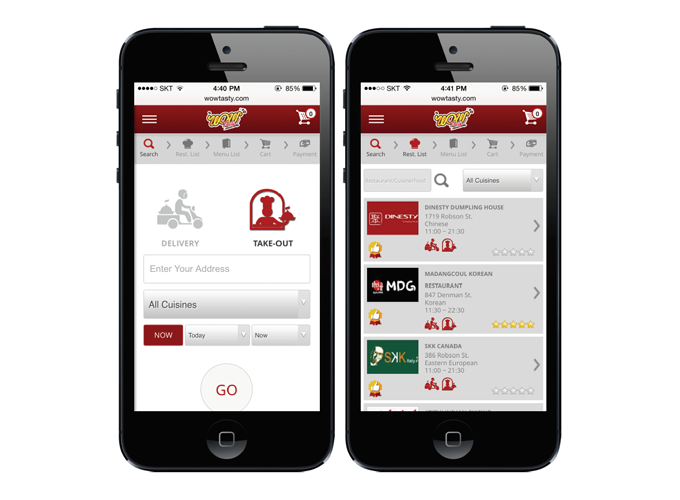
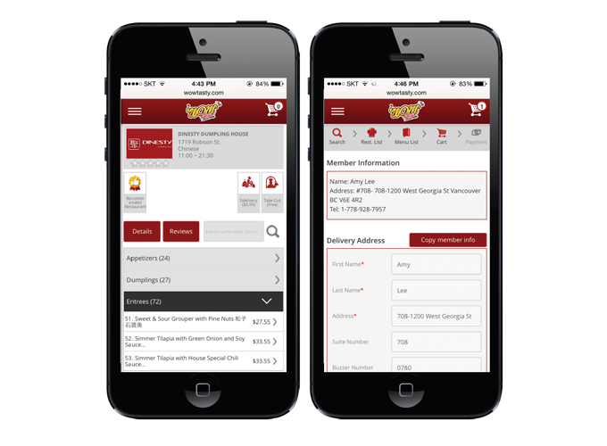

'Wow Tasty' Mobile Web Development
Overview
Wow Tasty is about food delivery&take-out online ordering system in Vancouver.
The company had only a website. As the age of mobile-first rapidly grew, the percentage of customers accessing the website via the mobile phones soared, so we decided to create a mobile web. We chose the mobile devices and web browsers that people use most and made them responsive to the web. As an e-commerce site, we designed the customer journey from ordering stage to payment stage to be the most convenient and user-friendly.
My Roles
- Researched the latest UX/UI trends of mobile web
- Interviewed the stakeholder to know what the goal and purpose is
- Created the content map and sitemap
- Wrote the wireframes and prototypes in PSD
- Created the personas and scenarios, and conducted user testing
- Lead front-end development using HTML, CSS, jQuery, and JavaScript
- Conducted usability testing and page testing
Work Process
(1) Research
- Mobile web goal and purpose research
- Mobile web UX/UI trends research
(2) Analyze
- Stakeholder and user interview analysis to find out the pain points and solutions
- Sitemap and content map
(3) Design/Develop
- Required functions list
- To-Be wireframes and prototypes in PSD
- Web development
(4) Test
- Usability testing and page testing
- Cross browser testing (iPhone, Galaxy, iPad, Tab, Chrome, Safari, and IE)
Result

[Main page & Restaurant list page]

[Restaurant detail page & Payment page ]